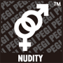
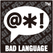
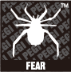

The Pan European Game Information (PEGI) age rating system is designed to help consumers decide before purchase if a game's content is suitable for the intended player. PEGI was launched in 2003, replacing different national systems with a single unified system for most of Europe.
For games on sale in retail outlets, the age rating is clearly displayed on the packaging. For games sold through Nintendo eShop, the age rating is shown prior to download.
Each game rated by PEGI displays an age icon and, in some cases, one or more content descriptor icons.
The PEGI age categories are: 3, 7, 12, 16 and 18. The age icon provides guidance as to the minimum suitable age of the player; it does not indicate the difficulty of the game.
  
Descriptor icons show the type of content found in the game. The severity of the content is determined by the age category. For example, a game rated ‘16’ with a ‘Violence’ descriptor may include stronger content than a game rated ‘7’ with the same ‘Violence’ descriptor.
For more information, please refer to the PEGI website at www.pegi.info.